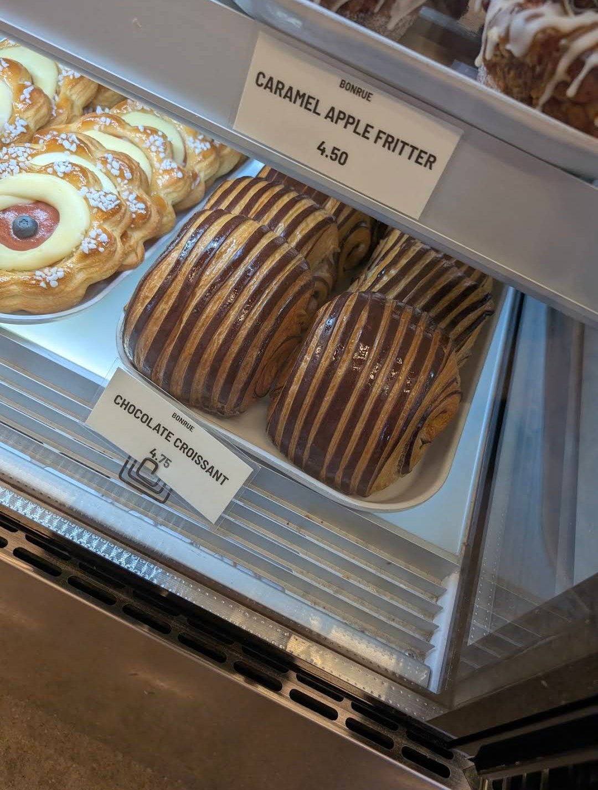
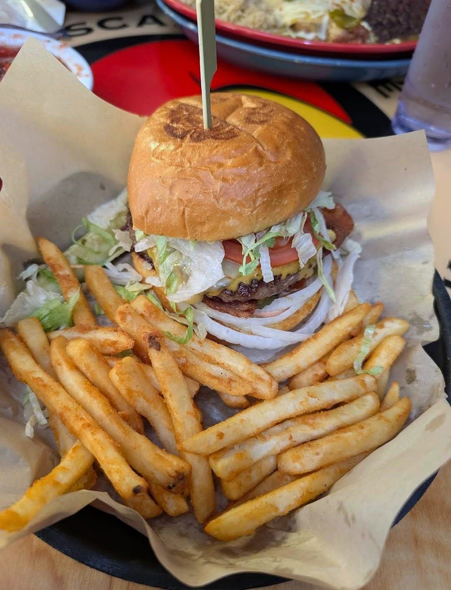

Reviews
Honest, detailed reviews from my travels and closer to home.

Bonrue Bakery
A must-stop on the way to Zion: a gorgeous pastry case, a striped chocolate croissant and coffee.

Oscar's Cafe
The Murder Burger, a half-pound garlic burger, and fantastic pork enchiladas just 5 minutes from Zion.

Slater's 50/50
Excellent burgers, killer bacon, crispy mac and cheese balls and a $28 all-you-can-eat deal off the Strip.
The Carriage House Buffet & Catering
A fresh, hot Southern breakfast buffet and honestly my favorite pancakes ever.

Seoul Casa
Korean Mexican fusion done right: crispy bulgogi egg rolls, kalbi beef enchiladas and a quesadilla with mac salad.

La Segunda Bakery and Cafe
Cuban bread done right since 1915, and a dessert case that makes you renegotiate your order.

El Mezcal | Mexican Restaurant
Chipotle shrimp, soft shrimp chimichangas with cheese sauce, and great service on a quiet Sunday.